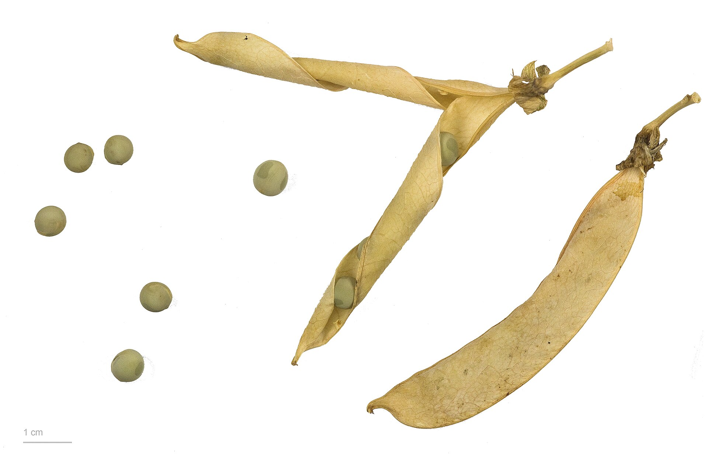
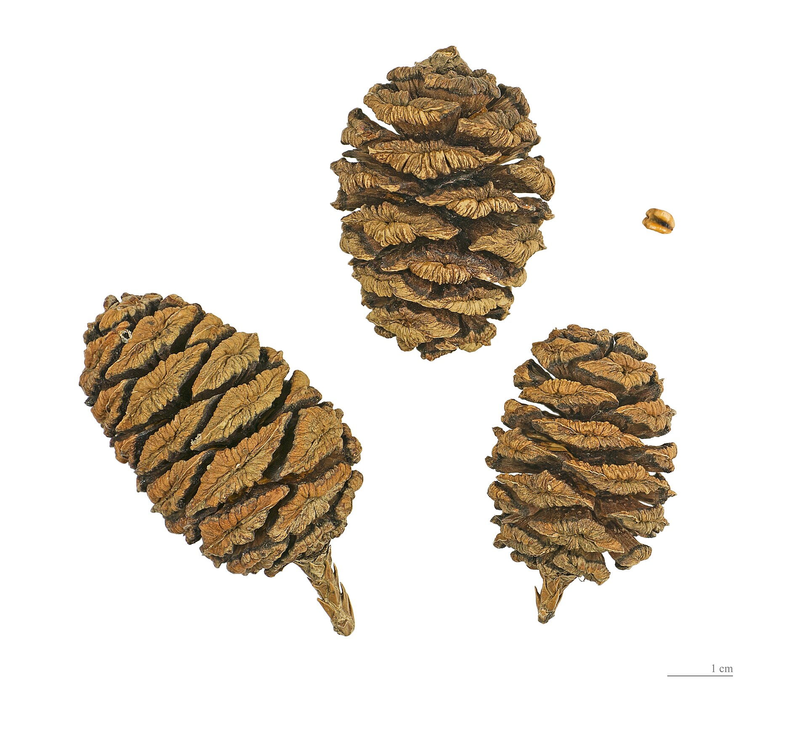
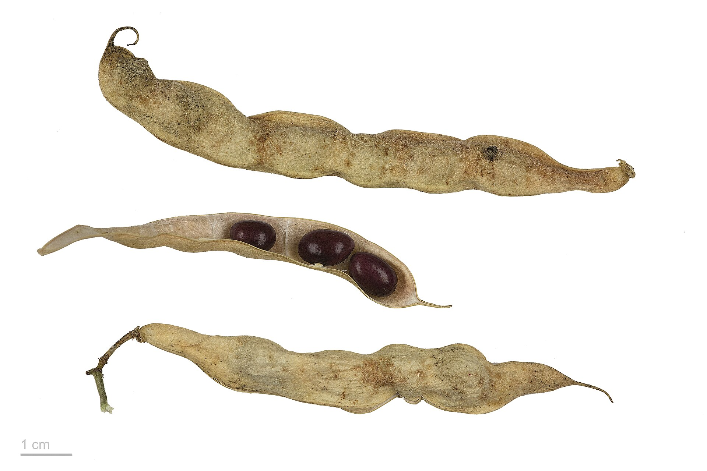
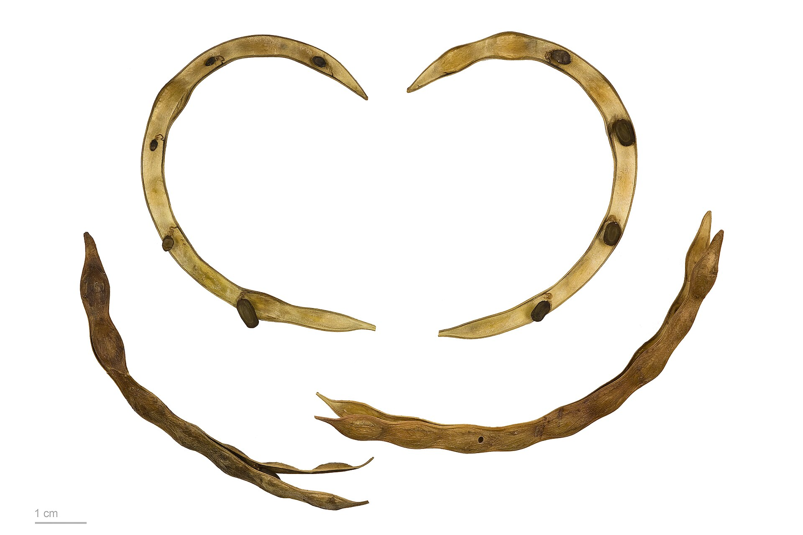
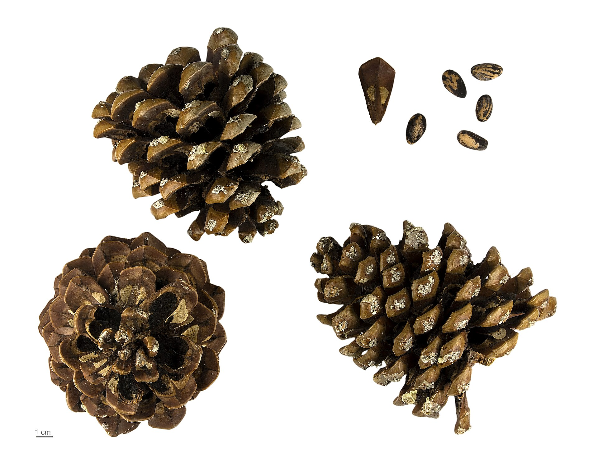
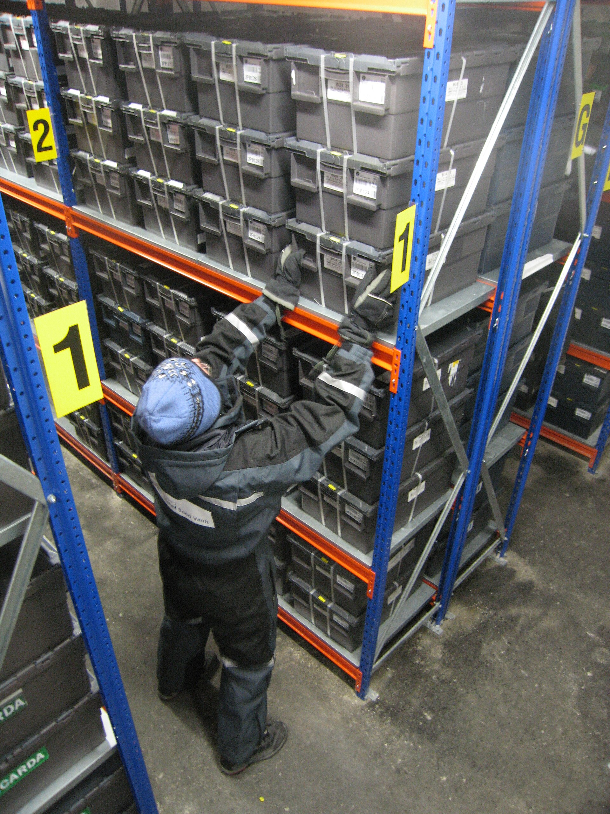

$ gitseed verify gitseed://d7df…f3/demo demo · gitseed://d7df…f3/demo publisher key d7df-145e-4e61-6c0f-fd0b identity [VERIFIED] key published at https://example.org/.well-known/gitseed REF COMMIT SIGNED BY STATUS v1.1 65c652c507 dev@x VERIFIED v1.0 f97914f138 dev@x VERIFIED main 4b664c2f98 — unsigned branch (= v1.1) other publishers of the same code: FORK 03a1-77c2-… demo 2026-11-20 RESULT: OK
$ gitseed publish --dry-run
to gitseed://d7df…f3/demo
include main, v*
publish main v1.0 v1.1 v1.2
never refs/stash
refs/remotes/origin/main
refs/notes/commits
new 1 segment, 38 commits, 214 KiB
secrets none found
dry run: nothing was published
$ gitseed pull demo: 3 new commits on main snapshot signed by root (d7df-145e) ! a maintainer was added 9a0c-22be-71f3 label: bob added by root on 2026-11-18 accept this change? [y/N]
$ gitseed health --needs-me PROJECT COPIES SIZE mesh-notes 1 8 MiB tinyvm 2 41 MiB demo 3 2 MiB $ gitseed seed adopt 20GiB adopting mesh-notes, tinyvm (49 MiB)
$ gitseed rotate --recovery-key /media/usb/recovery.key
old key d7df-145e revoked
new key 51b2-0c7e active
signed with the recovery key committed
at the first publish
clients follow on their next pull
demo
Published by the owner of example.org
| Ref | Signed by | Status |
|---|---|---|
| v1.1 | dev@x | Verified |
| v1.0 | dev@x | Verified |
| main | unsigned | Branch |
Check before you trust
verify shows every branch, tag and release with who signed it. Exit code 2 when anything fails.
From the swarm
to your disk
A repository is a set of ordinary torrent files and a signed manifest. They are found through the Mainline DHT, which has millions of nodes and no owner, or through any mirror.
Scattered
Seeders, mirrors, onion services and USB sticks each hold the files. Any one of them is enough.
Checked
Every file is checked against the publisher's signed manifest. Forgeries and rollbacks are refused.
Cloned
You get an ordinary git repository. git clone gitseed://… and git push work as before.
48 copies of demo in the swarmYour clone: verified. Try to take it down.
Hardy varieties
Five guarantees your own client checks on every clone, whoever happens to host the files.

Forks are labelled
Same name and history under a different key is shown as FORK. Lookalike keys are flagged.

Nothing is erased
Seeders always keep the first snapshot and every signed document, so a forced empty update cannot wipe history.

Small updates
Each publish uploads only new history, as one segment. Every 20 segments are compacted into a new base.

A lost key is recoverable
An offline recovery key, committed at the first publish, revokes a stolen publishing key.

Tags never move
A moved tag is a failure. Release files are pinned by sha256 inside the signed tag.
How your clientreads a project
| Group | Verdict | What it means | What gitseed does |
|---|---|---|---|
| Publisher | Verified | A URL the author controls names this key. | Shows “published by the owner of” the domain |
| Pinned | The same key you trusted before. | Continues without asking | |
| Unknown | Never seen, and nothing proves who owns it. | Asks before you accept it | |
| Each ref | Verified | Signed by a listed signer, and the author's identity is proven. | Checks it out |
| Signed | The signature checks out; the identity is not proven. | Checks it out, marked signed | |
| Unsigned | The ref has no git signature. | Marks it, or refuses where signing is required | |
| Unverified | Signed by a key the project does not list. | Marks it unverified | |
| Fail | A bad or missing signature, a moved tag, a rollback, or a snapshot from a non-maintainer. | Refuses to check it out | |
| Exit code | 0 | Everything checks out. | OK |
| 2 | Something failed. | Stops your script | |
| 3 | Signatures are fine; nothing proves who owns the key. | Lets you decide | |
When things go wrong
Lost laptopMy laptop was stolen with my publishing key on it.
From any clone, run gitseed rotate --recovery-key /media/usb/recovery.key. Every client follows the rotation automatically and the stolen key is revoked.
A thief holding only the publishing key cannot do this. The recovery key was committed in advance.
Leaked secretI published an API token by mistake.
publish scans new commits for keys and tokens first, and uses gitleaks if it is installed. If one slips through, gitseed retract <snapshot> asks mirrors to stop listing that snapshot.
Copies may already exist. Treat the secret as leaked and rotate it.
TakedownA host received a takedown request.
That host runs gitseed block and stops serving the project. Every other seeder, mirror and USB stick still has it, and clones keep working.
Mirrors can hide a project but cannot forge it, so importing from several mirrors defeats censorship.
Your IPCan people see that I'm seeding?
Yes. As with any BitTorrent seeding, peers can see your IP address. Set proxy = "socks5://127.0.0.1:9050" to send traffic through Tor or a VPN, bind to a VPN interface, or seed from a seedbox.
From GitHubWe're on GitHub today. How do we move?
Run gitseed init before you require signatures; existing unsigned tags are kept as legacy. Then add your gitseed:// address to the GitHub README so people can find it.
UpdatesCould a bad update slip into my clone?
Plain git pull refuses an update that needs review. gitseed pull stops and asks when a signing key is new, a maintainer is added, signing rules are weakened, history is rewritten, or the project was silent for months.
To wait before taking any update, set git config gitseed.delay 72 (hours).
Build it from source. It needs git 2.34 or newer and a Rust toolchain.
Install
Sowing instructions
Each command in the order you would run it. The README has every option.
Plant
cargo build --releaseonceBuilds the gitseed binary.ln -s $(pwd)/target/release/gitseed ~/.local/bin/git-remote-gitseedonceLets plain git clone and push gitseed:// addresses.
Publish
gitseed keygen --recovery-out /media/usb/recovery.keyonceA publishing key, and a recovery key to keep offline.gitseed publish --dry-runfirst timeWhat will and won't be published, its size, and a secret scan.git push gitseed://<key>/myproject mainevery updateUploads only the new history.gitseed release v1.2 dist/*each releaseA signed tag listing each file's sha256.
Verify
gitseed verify gitseed://<key>/<name>before trustingEvery branch, tag and release, with signer and status.gitseed clone gitseed://<key>/<name> --ref v1.2any timeFetches only what v1.2 needs, verified.
Seed
gitseed seed add gitseed://<key>/<name>per projectFollow a project; pick its refs, tags and release files.gitseed seed adopt 20GiBdaemonHosts the least-seeded projects you know, within the space you give.gitseed export /srv/www/gitseedany timeA complete static mirror for a web server or a USB stick.
BitTorrent on port 6881.
Browser view on 127.0.0.1:7878.